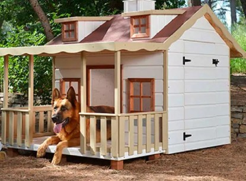

Casa Eco Lujo / Diseño
Precio: $900.000
Descripción:
La Casa Eco Lujo / Diseño es la máxima expresión de elegancia, innovación y sostenibilidad para el hogar de tu mascota. Su diseño modular y materiales de grado estructural reciclados garantizan durabilidad, confort y una estética premium que realza cualquier espacio.
Características principales
- Madera plástica de grado estructural reciclada, máxima resistencia y durabilidad.
- Diseño modular adaptable a diferentes espacios y necesidades.
- Ventanas tipo célula ventilada para óptima circulación de aire.
- Base con patas de acero inoxidable, resistente a la corrosión y humedad.
- Acabado estético premium, ideal para interiores y exteriores modernos.
- Fácil de armar y limpiar.
Beneficios
- Ofrece el máximo confort y seguridad para tu mascota.
- Materiales ecológicos y de alta gama.
- Diseño exclusivo que aporta valor estético a tu hogar.
- Durabilidad y resistencia excepcionales.
Dimensiones aproximadas
- Largo: 120 cm
- Ancho: 90 cm
- Alto: 100 cm
Recomendado para:
- Perros medianos y grandes
- Gatos grandes
- Otras mascotas de tamaño similar
Preguntas frecuentes
- ¿El diseño modular permite ampliaciones? Sí, puedes agregar módulos adicionales según tus necesidades.
- ¿Es resistente a la intemperie? Sí, todos los materiales son aptos para uso exterior.
- ¿Qué mantenimiento requiere? Limpieza periódica y revisión de las patas de acero inoxidable.